地政学
クウェート市はペルシャ湾北西部で、イラク、サウジアラビア、イラン湾岸、海上油路を意識する首都です。湾岸戦争の記憶、議会政治、米軍との安全保障、港湾と石油輸出が都市の緊張を形作ります。今も強く現在も続きます。
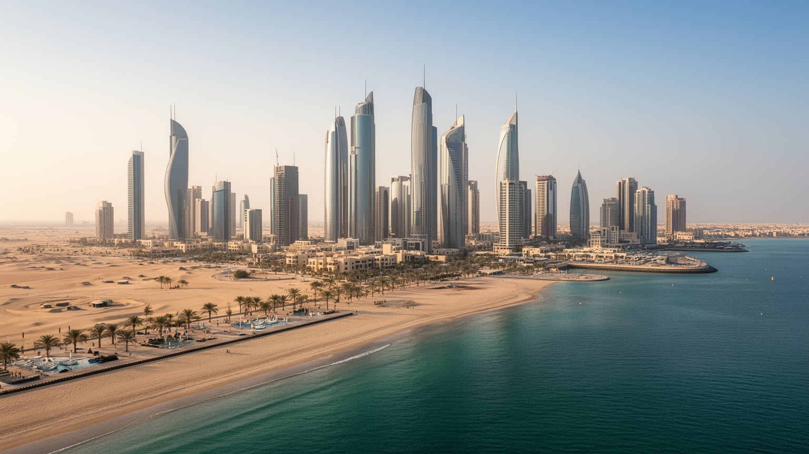
🇰🇼 クウェート / 西アジア / World City Atlas
クウェート湾に面した国家首都です。石油で築いた財政、議会政治、港湾、金融、スーク、移民労働、イスラム生活、酷暑の都市運営が近距離に重なります。
都市の骨格
クウェート市はクウェート湾の南岸に、旧市街、議会、官庁、金融街、スーク、港、海辺の住宅地を集めます。小さな国土の政治と石油経済が、首都の道路と海岸線に濃く現れます。
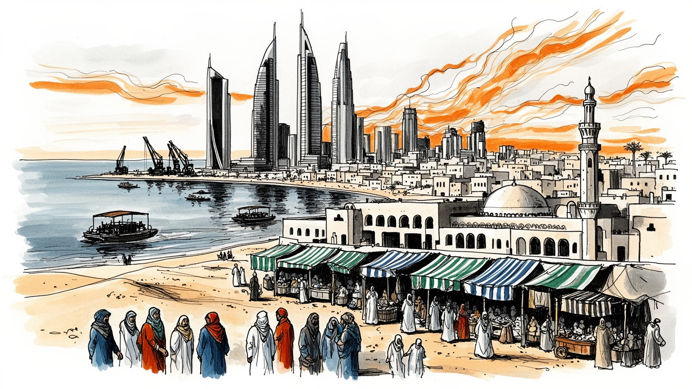
クウェート市はペルシャ湾北西部で、イラク、サウジアラビア、イラン湾岸、海上油路を意識する首都です。湾岸戦争の記憶、議会政治、米軍との安全保障、港湾と石油輸出が都市の緊張を形作ります。今も強く現在も続きます。
国家財政は石油収入に依存し、首都には官庁、銀行、投資機関、港湾、建設、小売、医療、教育が集まります。現場を支えるのは南アジアやアラブ圏から来た労働者で、雇用制度と住まいの格差が都市問題になります。日々深きます。
イスラムの礼拝、ラマダン、家族の集まり、ディーワーニーヤ、スークの商習慣、海の記憶が都市文化を作ります。近代的な高層街区の近くに、真珠採取、商人、遊牧の記憶が今も生活の語りとして残ります。街角にも残ります。
住民は車、モール、海辺、公園、学校、病院、礼拝所を行き来します。旅行者は塔、グランド・モスク、スーク、博物館、湾岸道路を巡るが、酷暑、水、移民労働、住宅、公共交通が日常の課題です。首都の毎日なのです。
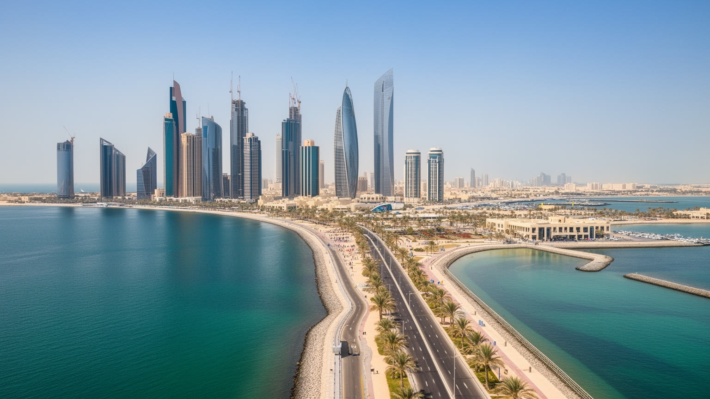
クウェート市を読む第一の入口は、入り江の地形と首都機能がほぼ重なることです。旧市街はクウェート湾の南岸に置かれ、港、スーク、官庁、議会、銀行街、モスク、海辺の道路が近い距離で連続します。国土は小さいが、周囲にはイラク、サウジアラビア、イラン湾岸、ペルシャ湾の航路があり、都市の視線は常に外へ向きます。湾岸の水面は景観であると同時に、石油輸出、食料輸入、軍事警戒、外交の回路です。高層ビルや広い道路は新しい国家の豊かさを示すが、都市の核には海から商いを始めた港町の記憶が残ります。政治機関が海に近い場所に集まるため、国内の意思決定と国際的な緊張は同じ道路網に乗ります。クウェート市は巨大な都市圏というより、国家を運営する中枢、港湾、金融、生活の場が凝縮された首都です。砂漠と海の間にあるため、都市の拡張は水、電力、道路、冷房、埋立、海岸管理に強く縛られます。海辺の開発だけを見ると豊かな湾岸都市に見えますが、地政学的な不安と資源への依存も同じ場所にあります。湾を中心に読むと、クウェート市は小さな首都でありながら、世界のエネルギー市場と安全保障の神経が通る都市だと分かります。湾岸道路を走る車、港へ向かう貨物、官庁へ通う職員、夕方の海辺を歩く家族は別々の風景に見えて、同じ入り江の条件に支えられています。湾の幅が都市の距離感を決めます。
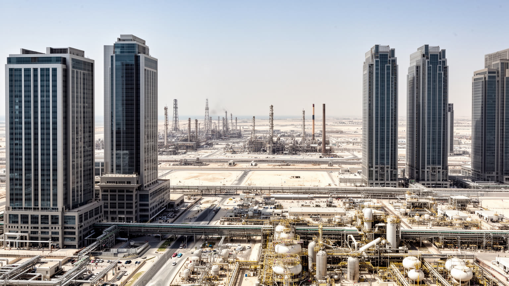
クウェート市の経済を語るとき、石油は単なる産業部門ではなく、国家と都市の関係を決める基盤です。油田や輸出施設は市内中心部だけにあるわけではありませんが、収入は政府予算、公共雇用、福祉、教育、医療、住宅、インフラ投資として首都に戻ります。銀行、投資庁、企業本社、法律事務所、会計、保険、建設会社は、石油収入を管理し、使い、将来へ運用する都市機能を担います。高い国民所得は消費と公共サービスを支える一方、財政の油価依存、若者の民間雇用、補助金改革、脱炭素時代の不安を強めます。石油は豊かさを作ったが、経済の選択肢を狭める力にもなります。首都では、官庁勤務、金融専門職、建設現場、清掃、配送、家庭内労働が同じ都市で動くが、その待遇と権利は大きく異なります。クウェート市の繁栄を読むには、ビルの高さだけでなく、国家財政がどの層へ届き、誰が見えにくい仕事を担うのかを見る必要があります。石油収入を将来世代へ残す投資と、現在の公共サービスを維持する支出のバランスも都市生活に直結します。エネルギー転換が進むほど、首都は財政の安定、産業多角化、教育、技能形成を急ぐ必要があります。クウェート市は石油で豊かになった都市であると同時に、石油後の制度を考えなければならない都市でもあります。その課題は遠い未来ではなく、大学の専攻、若者の就職、公務員採用、民間企業の育成、都市サービスの費用として毎年現れます。
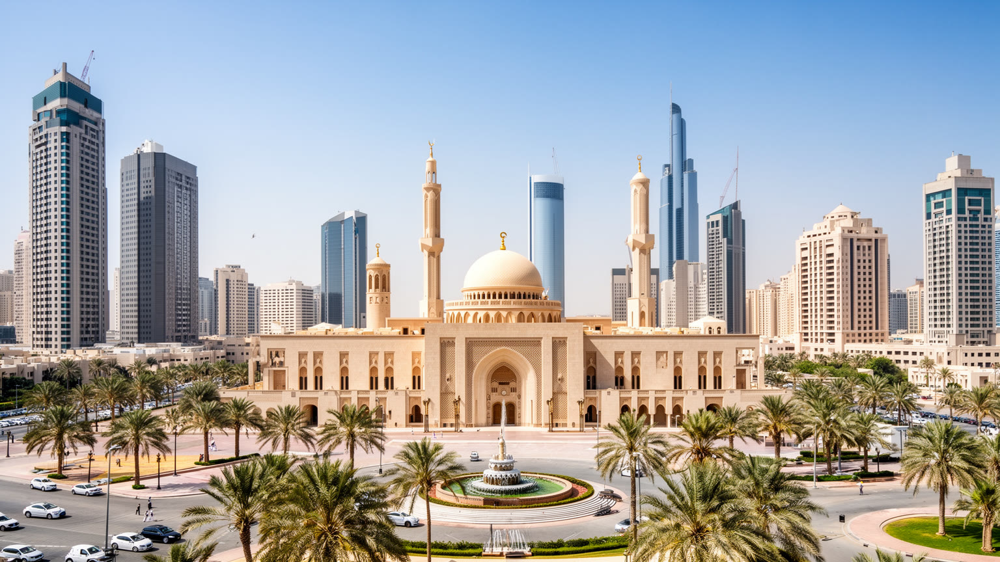
クウェート市は湾岸の君主国の首都でありながら、議会政治の存在が都市空間に比較的はっきり現れる場所でもあります。国民議会、首長家、内閣、官庁、裁判所、報道、ディーワーニーヤでの政治談義が、公式と非公式の回路を作ります。政策は石油収入の配分、公務員雇用、住宅、国籍、市民権、移民労働、補助金、教育、女性の社会参加をめぐって議論されます。議会と政府の緊張は、制度の活力であると同時に、改革の停滞や行政の遅れにもつながります。首都の道路、庁舎、新聞、集会、家族の客間は、政治が生活に近いことを示します。クウェートでは国民と非国民の境界が非常に大きく、政治参加の権利や公共サービスへの接続もその境界に左右されます。都市を読むには、華やかな国家行事だけでなく、誰が意思決定に声を持ち、誰が働きながらも政治的には見えにくいのかを確認する必要があります。議会政治は市民社会の重要な資源ですが、人口の多数を占める外国人労働者をどのように扱うかという問いを完全には解かないです。制度の成熟は、国家財政の透明性、公共サービスの質、法の運用、住民の尊厳に表れます。クウェート市の首都性は、権力が一枚岩でなく、交渉と停止を繰り返しながら都市の日常を動かしている点にあります。さらに湾岸戦争の記憶は、議会や政府が安全保障、同盟、主権を語る時の背景になります。侵攻と解放の経験は、首都の政治を抽象論にせず、国家が壊れ得るという感覚を市民の会話に残しています。
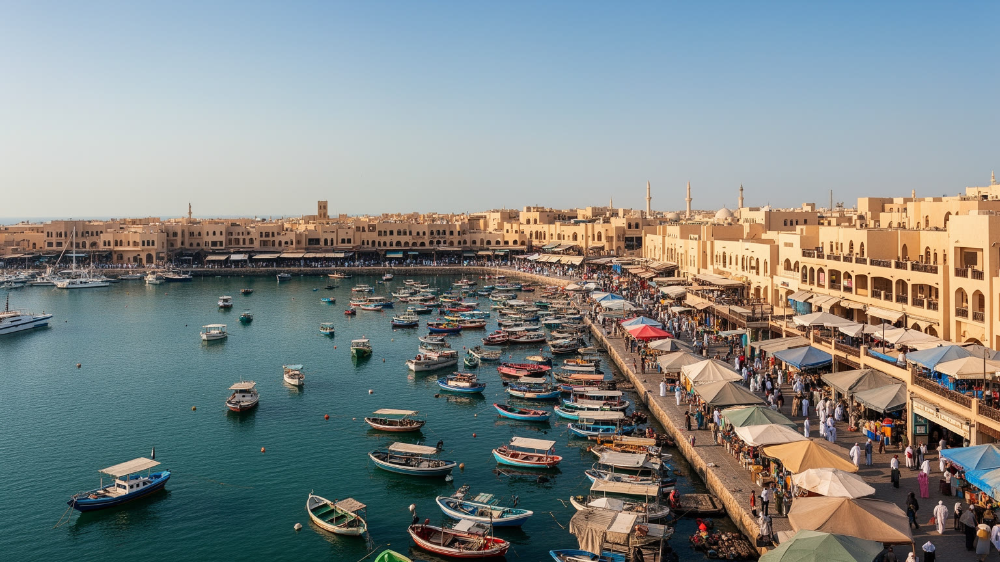
石油の印象が強いクウェート市ですが、都市の記憶は港とスークから始まります。石油以前のクウェートは、真珠採取、海上交易、造船、魚、デーツ、布、香辛料、周辺の遊牧民との取引によって湾岸に位置を持っていました。スーク・アル・ムバラキヤのような市場では、香辛料、金、衣料、食堂、茶、日用品が並び、商人の会話と家族の買い物が旧市街のリズムを残します。港は今も食品、建材、車、生活物資を運び、島や湾岸の交通を支えます。高層ビルやモールが広がっても、スークは都市が単なる消費空間ではなく、値段交渉、顔の見える信用、食事、記憶を持つ場所であることを示します。観光客は市場を異国情緒として歩くが、住民にとっては夕食、贈答、礼拝後の外出、家族の時間と結びつきます。輸入に大きく依存する国では、港の混乱や物流費の上昇がすぐに物価へ響きます。市場の棚に並ぶ米、魚、香辛料、衣類は、遠い港、為替、燃料、労働の条件とつながります。クウェート市の港とスークを読むことは、石油国家になる以前から続く海の商業感覚と、現在の輸入依存を同時に読むことです。古い市場が残るほど、都市は高層化だけでは測れない深さを持ちます。そこには、湾岸の近代化の前後をつなぐ生活の記憶があります。市場の保存は観光のためだけではなく、住民が古い商売の作法と食の習慣を使い続けるための都市政策でもあります。
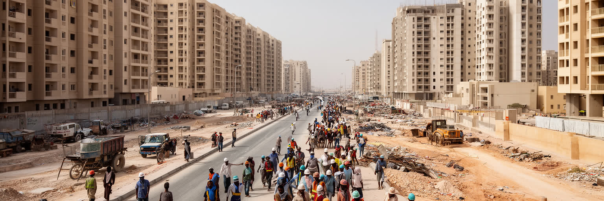
クウェート市の日常は、多くの外国人労働者なしには成立しません。南アジア、東南アジア、アラブ諸国、アフリカから来た人びとが、建設、清掃、警備、配送、レストラン、家庭内労働、運転、医療補助、小売、港湾で働きます。住民が快適に使うモール、道路、住宅、病院、学校、ホテル、スークの裏側には、長時間労働、暑熱、共同住宅、送金、在留資格、雇用主との力関係があります。国民と外国人の賃金、福利厚生、政治的権利、住宅環境の差は大きく、都市の豊かさは均等に分配されていないです。酷暑の屋外作業は健康リスクを高め、昼休み規制や安全管理が生活を守る条件になります。家庭内労働者は住居の内側で働くため、労働時間や休息が見えにくいです。移民労働を単なる人手不足の解決策として扱うと、都市を支える人の尊厳が抜け落ちります。クウェート市を読むには、国民向けの公共サービスと、外国人労働者が使うバス、寮、送金所、安価な食堂、診療所を同じ地図に置く必要があります。彼らの収入は母国の家族を支え、湾岸都市とインド洋周辺の社会を結びます。都市の倫理は、働く人が安全に眠り、賃金を受け取り、病気の時に助けを得られるかで測られます。クウェート市の便利さは、その問いから切り離せません。労働制度を改善することは、外から来た人だけの問題ではなく、首都の清潔さ、安全、サービスの持続性を守る条件でもあります。
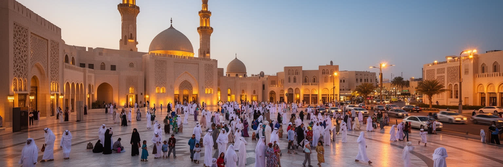
クウェート市の時間は、礼拝、ラマダン、イード、金曜の集まり、家族訪問、ディーワーニーヤによって形づくられます。グランド・モスクのような大きな施設だけでなく、住宅地や職場の近くにあるモスクが日常のリズムを整えます。断食月には夕方の食卓、夜の市場、慈善、交通の混雑が街の空気を変え、イードには家族や親族の訪問が都市全体を動かします。ディーワーニーヤは客間であり、政治、商売、親族、近所の情報が交わる社会制度でもあります。女性の教育と就労、若者の消費文化、移民の宗教施設、外国人住民の生活習慣は、保守的な規範と都市の国際性の間で調整されます。宗教は都市を固定するだけでなく、相互扶助、寄付、近隣の相談、家族の責任を支えます。観光客や新しい住民が街を理解するには、建物の見学だけでなく、礼拝時間、服装、食事、写真、家庭の境界への配慮が必要になります。クウェート市の文化は、豪華なモールや高層ビルの中にも、家族の名誉、来客をもてなす作法、祈りの時間が入り込む点に特徴があります。宗教的な生活は個人の信仰であると同時に、都市の時間割、休日、商売、食、公共の礼儀を決める基盤です。そこを読むと、首都の日常はより立体的に見えます。外国人住民の教会や小さな礼拝空間も都市の一部であり、多数派の文化と少数派の実践が職場や住宅地で接しています。今も続きます。
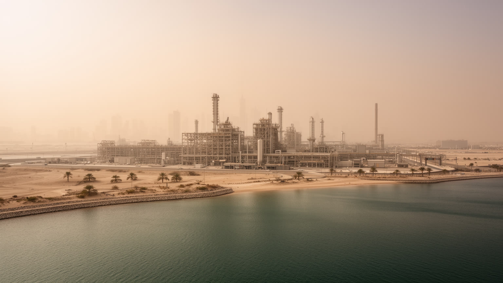
クウェート市の都市生活は、極端な暑さを前提に設計されます。夏には屋外の活動が制限され、歩行、建設、配送、学校、買い物、観光の時間帯が変わります。冷房、電力、水、日陰、車、モール、屋内公共空間は快適さの道具であると同時に、生命を守る基盤でもあります。降水が少ないため、飲料水と都市用水は海水淡水化、貯水、送水、エネルギー供給に依存します。石油とガスに支えられた水と冷房のシステムは、豊かな都市生活を可能にするが、気候変動と電力需要の増大によって脆さも増します。暑熱の影響は平等ではありません。屋外で働く建設作業員、清掃員、警備員、配送員、バスを待つ人、低所得地区の住民ほど危険を受けやすいです。海辺の遊歩道や公園は冬には快適ですが、夏には時間を選ぶ必要があります。都市計画は高層ビルや道路だけでなく、日陰の歩道、バス停、緑地、断熱、節水、労働安全を含めて考えなければなりません。クウェート市の気候は、都市を美しく見せる背景ではなく、生活の費用、労働の危険、公共空間の使いやすさを決める条件です。水と冷房が止まれば、首都の活動はすぐに揺らぎます。だから暑熱への適応は、環境政策であると同時に社会政策でもあります。湾岸都市の未来は、暑さの中で誰が外に残されるのかを見れば分かります。省エネルギー建築や日陰の街路が増えるほど、都市は冷房だけに頼らない生活の余白を取り戻せます。
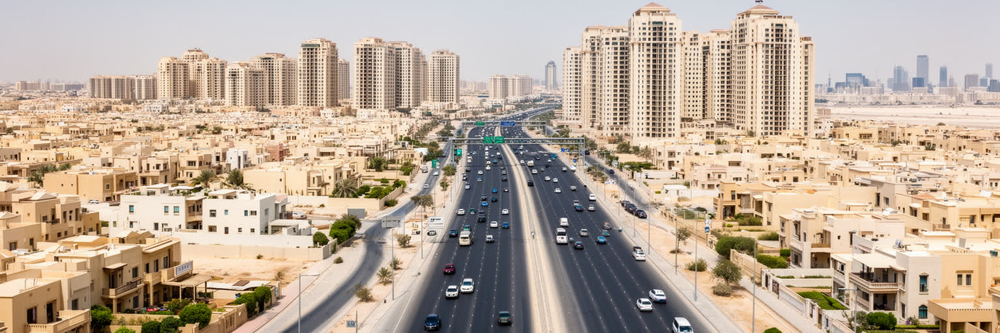
クウェート市の暮らしは車中心の移動と強く結びつきます。幹線道路、環状道路、広い駐車場、住宅地、モール、学校、病院、官庁が車で接続され、徒歩や公共交通だけで生活を完結することは難しいです。国民向けの住宅制度は社会契約の重要な柱ですが、土地の配分、待機期間、郊外化、インフラ費用は大きな課題です。外国人労働者は職場に近い集合住宅や寮に住むことが多く、住環境の質は所得と雇用形態に左右されます。海辺の高級住宅、古い低層地区、郊外の家族住宅、労働者の宿舎は同じ都市にありますが、使う道路、店、学校、医療施設は違います。公共交通の不足は、女性、若者、低所得者、免許を持たない人の移動の自由を狭めます。交通渋滞と駐車需要は都市の時間を奪い、暑熱のため歩く選択肢も制限されます。住宅政策を考えるには、家の数だけでなく、職場、学校、買い物、病院、礼拝所へどのように移動できるかを見る必要があります。クウェート市の広がりは豊かさを示す一方、エネルギー消費、道路依存、社会的分断を強めます。より歩きやすい街区、使いやすいバス、日陰、混合用途の地区が増えれば、首都は車を持つ人だけの都市から、より多くの住民が使える都市へ近づきます。住まいと移動は、湾岸都市の包容力を測る重要な指標です。家族の大きさ、親族の近さ、使用人を含む家の運営も住宅の形を左右し、都市計画には文化的な住み方への理解が欠かせません。
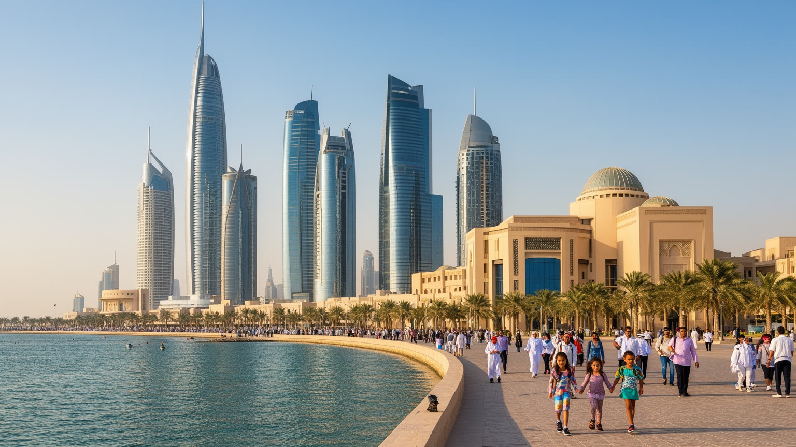
クウェート市の観光は、巨大な観光産業というより、首都の象徴を短い距離で読む旅に近いです。クウェート・タワーズは水、近代化、国家の復興を示すランドマークであり、海辺のコーニッシュは冬の散歩、家族の外出、釣り、写真、カフェの時間を受け止めます。グランド・モスク、スーク・アル・ムバラキヤ、博物館、サドゥ織りの文化施設、近代的なモールを巡ると、イスラム、商人文化、遊牧の記憶、石油国家の消費が近接していることが分かります。観光客にとって課題になるのは、酷暑、移動の車依存、公共交通の少なさ、宗教的な礼儀、写真撮影の配慮です。夏の昼に歩く街ではなく、冬の夕方や夜に海辺と市場が生きる都市でもあります。観光を考える時、クウェート市はドバイのような巨大娯楽都市と比べるより、政治首都、港町、生活都市として読む方が見えてきます。市場の食堂、魚、香辛料、茶、家族連れの散歩、博物館の展示は、派手な施設以上に都市の厚みを教えます。訪問者が増えすぎないことは、地域の日常を守る利点にもなります。クウェート市の魅力は、世界的な観光消費の速度から少し離れ、湾岸国家の歴史と生活を落ち着いて観察できる点にあります。海辺の風と市場の匂いを結ぶと、首都の記憶が立ち上がります。博物館で真珠採取や湾岸戦争を学び、市場で夕食を取り、夜の海岸を歩くと、短い滞在でも都市の層を追えます。
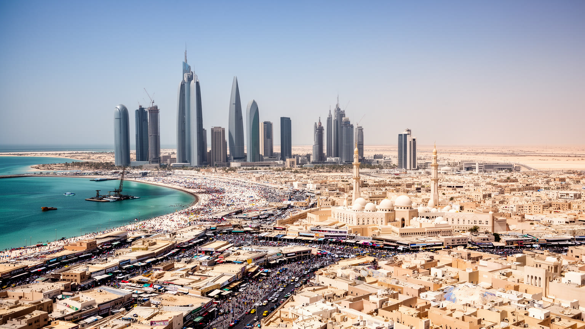
クウェート市を世界都市として読む面白さは、規模の大きさではなく、国家、石油、海、移民、記憶が狭い首都に凝縮している点にあります。湾岸の入り江に面した市街地には、議会、首長家、官庁、金融、港、スーク、モスク、海辺の道路、モール、労働者の住まいが重なります。石油収入は教育、医療、住宅、投資を支え、同時に油価依存と脱炭素時代の不安を生みます。国民は豊かな公共制度を享受する一方、都市を動かす多くの外国人労働者は権利と住環境で別の現実に置かれます。イスラムの礼拝と家族の集まり、ディーワーニーヤの政治談義、スークの商い、湾岸戦争の記憶、酷暑に耐える冷房と水の装置は、すべて首都の日常に入っています。クウェート市は、超高層化や観光競争だけでは説明できない湾岸都市です。小さな国の首都だからこそ、外交の緊張、財政の判断、労働制度、住宅政策が生活に近いです。海辺の豊かさを見るときには、輸入に頼る食卓、港の働き、暑さの中で外に立つ人、戦争の記憶も同じ地図に置く必要があります。そこに、湾岸の近代化が持つ成功と不安がはっきり見えます。クウェート市は完成した石油都市ではなく、資源後の時代に向けて制度と生活を作り直す途中の首都です。国民の福祉を守りながら、移民労働者の権利、気候適応、産業多角化を進められるかが、次の都市像を決めます。今も続きます。